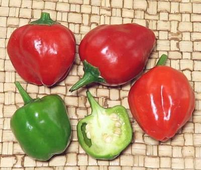
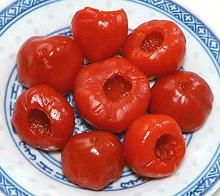

Juanita Chili

[Peppadew® Pepper, Malawi Piquanté, Sweet Piquanté Pepper;
Capsicum baccatum]
This Chili originated in South America, but is best known from South Africa.
Plants were found on a property formerly owned by a botanist, and were
quickly put to use as pickled peppers. they are fairly thick walled and of
rather moderate heat (H3)
These chilis are not commercially available in North America, except in
their pickled form from South Africa. To have them fresh, you must grow
them yourself from seed. Fortunately, they grow enthusiastically in part
shade and are good producers. They are perennials, so will produce for quite
a few years if protected from frost. The largest in the photo was 1.45
inches long x 1.22 inches diameter.
More on African Chilis.

Peppadew® Pepper
This is the form in which most people
know the Juanita Chili. They are cored to reduce hotness
(H2), and pickled with quite
a bit of sugar added. These peppers are often stuffed as an appetizer, or used
as a garnish, whole or sliced. The largest in the photo was 1-1/2 inches
diameter by 0.9 inch high. Most were closer to 1 inch diameter. Weight (cored
and pickled) averages about 0.33 ounce each (9.4 gms). Actual flavor is very
similar to pickled Red Bell Pepper. Ing: juanita peppers, water, sugar,
vinegar, salt, citric acid, ascorbic acid, calcium chloride.
Seeds of Juanita Peppers are available under several names, but growers
on contract to Peppadew International must buy young seedlings of a patented
cultivar directly from Peppadew. They must grow them as annuals to assure
uniformity.
Buying:
The pickled Peppadew® Peppers are easily
available on-line in North America, and in a few markets. The photo
specimens were purchased on-line for 2021 US $11.42 for a 14 ounce jar,
containing about 20 peppers.
cp_juanitz 220827 - www.clovegarden.com
©Andrew Grygus - agryg@clovegarden.com - Photos
on this page not otherwise credited © cg1
- Linking to and non-commercial use of this page permitted